Lab notebook analysis • 7 October 2026 • FilterMax F5, serial 1191
Practical conclusion: Start with 100 µL for low-concentration work. The lowest tested concentration, 2.1875 ng/µL, produced a signal above the matched blanks and an 8.5% triplicate CV at 100 µL. Doubling volume to 200 µL gave 8.0% CV and almost twice the signal, but also higher blank variation.
The user clarified that A30 contained 70 ng/µL. The exported metadata still records 16 ng/µL. This analysis preserves those original fields and uses the corrected nominal twofold series below. Concentration slopes decrease by 4.375-fold and concentration-limit estimates increase by 4.375-fold; blank-corrected readings, CVs, R² and volume comparisons are unchanged.
| Source | A30 | A29 | A28 | A27 | A26 | A25 | A31 |
|---|---|---|---|---|---|---|---|
| Nominal ng/µL | 70 | 35 | 17.5 | 8.75 | 4.375 | 2.1875 | 0 (blank) |
| Volume (µL) | Corrected OD | Sample SD (OD) | CV, n=3 | Interpretation |
|---|---|---|---|---|
| 50 | 0.01046 | 0.01051 | 100.5% | Inconsistent; D9 elevated |
| 75 | 0.00657 | 0.00124 | 18.9% | Detectable, less precise |
| 100 | 0.00862 | 0.00073 | 8.5% | Best supported starting choice |
| 200 | 0.01716 | 0.00137 | 8.0% | More signal; little precision gain |
All 96 wells are present and finite: 72 DNA wells and 24 A31 blanks. No wells are excluded. Electronic sample IDs, sources, volumes and replicates match the saved layout. This does not independently verify physical contents.
50 µL: the minimum tested volume. Its blanks are quiet, and concentrations 8.75-70 ng/µL have CVs below 6.4%. At 2.1875 ng/µL, however, D9 raises the triplicate CV to 100.5%. Do not generalize high-concentration performance to the lowest level. 75 µL: a volume-saving candidate; CV is below 4% at 8.75-70 ng/µL, but 18.9% at 2.1875 and 12.9% at 4.375 ng/µL.
Corning lists a recommended working range of 75-200 µL for plate 3635 [1]. Thus 50 µL is an exploratory use below that range; it is retained here, with its observed limitations. Neither this specification nor this single plate proves a universal minimum volume.
At 2.1875 ng/µL, all three wells at every volume exceed the matching blank mean plus 3.3 blank SD. This is evidence of separation from these blanks, not a validated detection probability. No DNA sample below 2.1875 ng/µL was tested. The noise-based estimates below are targets for follow-up, not demonstrated limits.
| Volume (µL) | Noise DL (95% interval) | Noise QL (95% interval) | Lowest tested passing strict screen |
|---|---|---|---|
| 50 | 0.73 (0.34-0.89) | 2.22 (1.02-2.69) | 8.75 |
| 75 | 1.44 (0.63-1.77) | 4.35 (1.90-5.36) | 8.75 |
| 100 | 1.02 (0.40-1.32) | 3.09 (1.20-4.00) | 4.375 |
| 200 | 1.12 (0.30-1.34) | 3.40 (0.91-4.05) | 4.375 |
All concentration values above are ng/µL. DL = 3.3 × blank SD / slope; QL = 10 × blank SD / slope [2]. Intervals resample wells on this plate only. The illustrative, post hoc strict screen requires all three wells above 10 blank SD and a corrected CV ≤10%; it is not a validated LOQ or a predefined acceptance criterion.
For perspective, 2.1875 ng/µL uses 109.375, 164.063, 218.75 and 437.5 ng at 50, 75, 100 and 200 µL. These masses assume the stated concentrations and planned volumes. No path-length correction was applied; absorbance cannot be converted to an independent DNA concentration or purity result from this read alone [3].
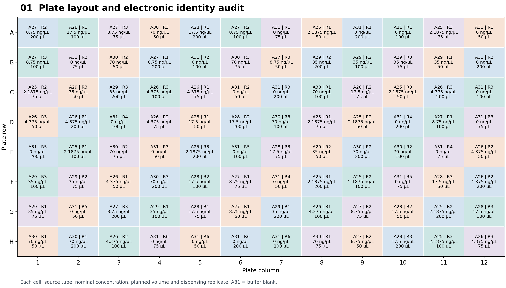
All 96 raw sample IDs match both the run manifest and the experiment layout. There are 72 DNA wells and 24 A31 buffer blanks. Original concentration metadata uses 16 ng/µL for A30; this map uses the user-corrected 70 ng/µL stock and nominal twofold dilutions. Electronic agreement does not independently prove physical contents.
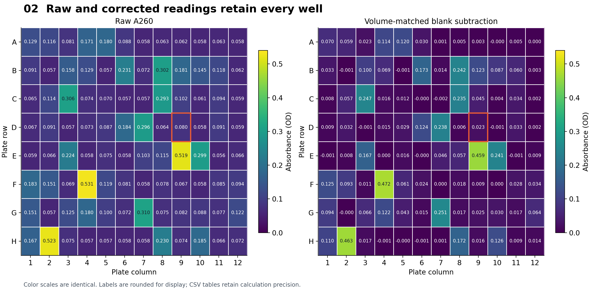
All 96 readings are finite. Raw A260 ranges from 0.05649 to 0.53148 OD. Each well is corrected with its own volume's blank mean. D9 is outlined for follow-up, not excluded. Neither heatmap measures actual fill volumes.
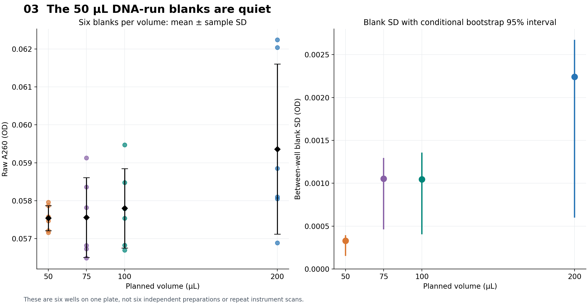
Blank SDs are 0.000330, 0.001054, 0.001046 and 0.002242 OD at 50, 75, 100 and 200 µL. The high 50 µL background seen in the earlier Orange G run is absent here. This is a different preparation and wavelength; it does not identify the cause of the earlier problem.
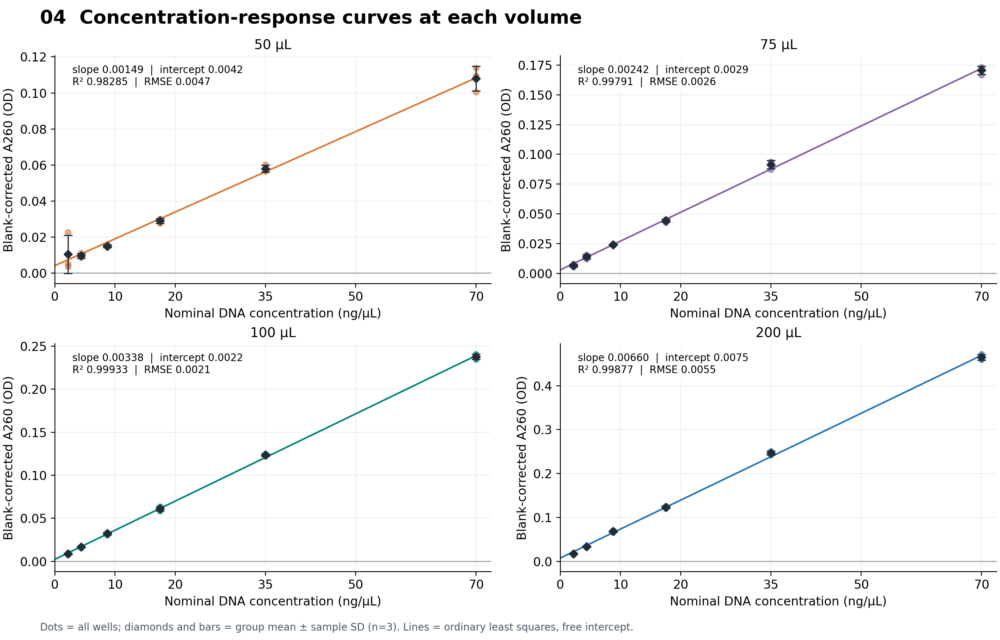
Responses rise strongly with nominal concentration at every volume. Full-range R² values are high, but this alone does not establish strict linearity or low-end accuracy. Fit all 18 sample wells per panel with a free intercept; the residual analysis shows where a straight line misses group means.
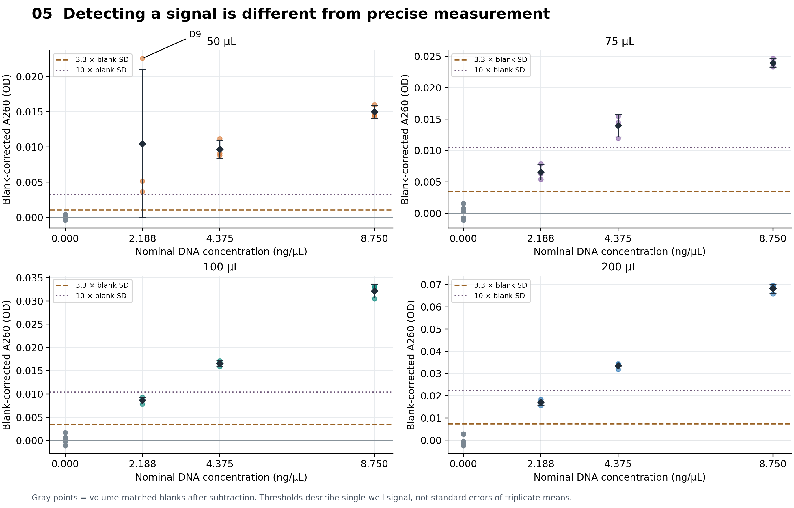
All three 2.1875 ng/µL wells at each volume exceed the matching 3.3-blank-SD screen. Their corrected CVs are 100.5%, 18.9%, 8.5% and 8.0% as volume increases. Thus a favorable blank-noise ratio at 50 µL does not rescue its inconsistent low-concentration samples. Thresholds are exploratory screens, not validated detection probabilities.
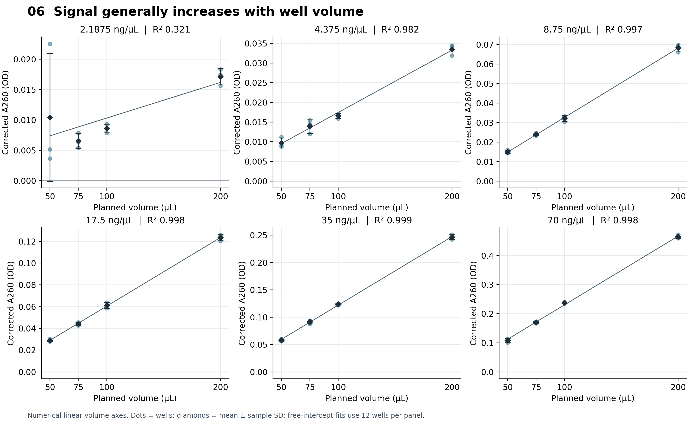
At fixed concentration, larger planned volumes generally give larger corrected absorbance. The lowest concentration is disrupted by the elevated D9 result at 50 µL. At 2.1875 ng/µL, moving from 100 to 200 µL nearly doubles mean signal, but blank variability also increases, so signal gain alone is not a detection-limit improvement.
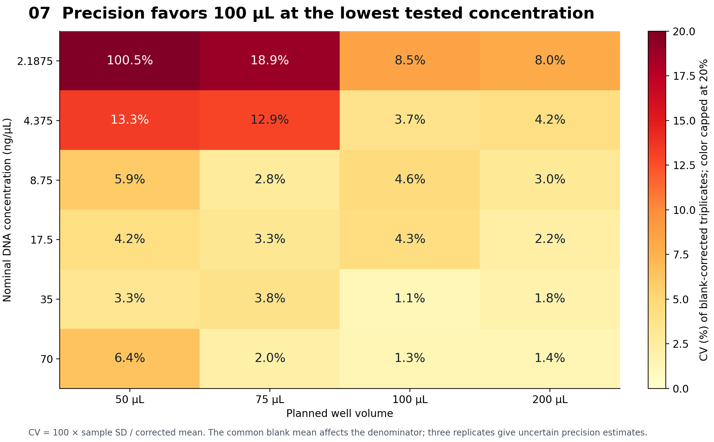
At 100 and 200 µL, all six concentrations have within-condition corrected CV below 10%. At 75 µL, 2.1875 and 4.375 ng/µL have CVs of 18.9% and 12.9%. At 50 µL, CV is below 10% from 8.75 to 70 ng/µL, but fails badly at 2.1875 ng/µL. These three-well CVs measure within-plate repeatability, not dilution accuracy or between-day precision.
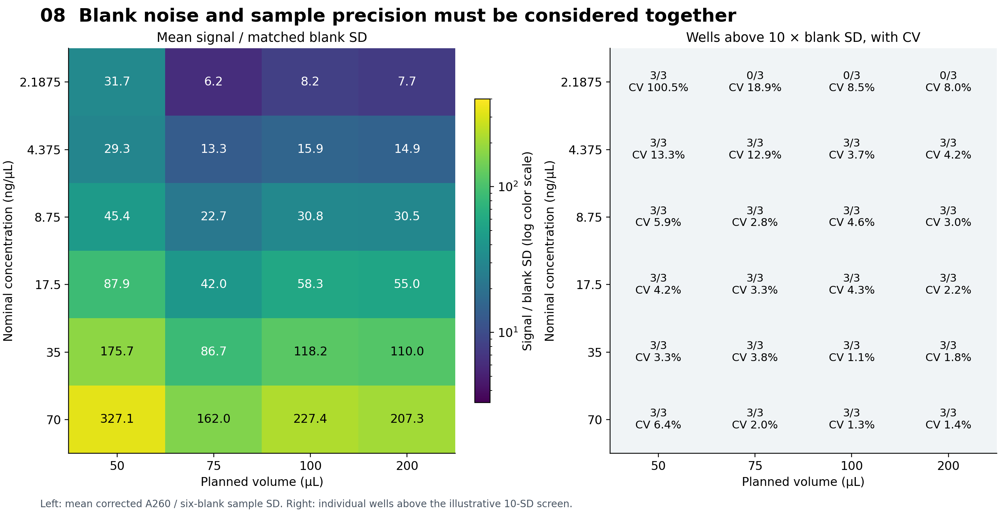
The 50 µL, 2.1875 ng/µL mean is 31.7 blank SD above zero, yet its CV is 100.5%. In contrast, 100 µL gives a smaller ratio of 8.24 but much tighter samples. The blank-noise ratio is not instrument signal-to-noise and is not a substitute for repeatable sample results or accuracy validation.
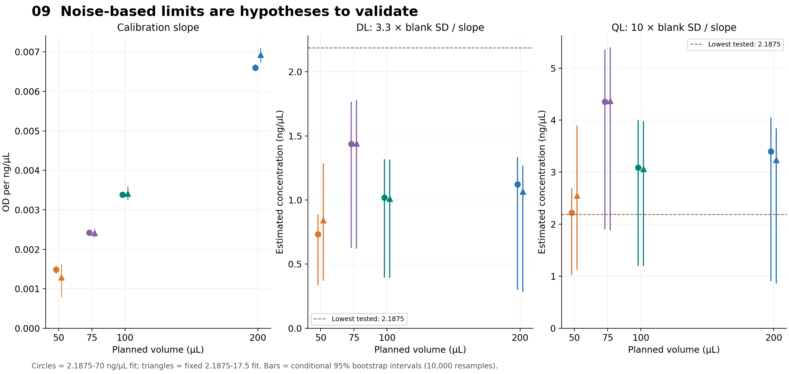
Full-range blank-noise DL estimates are approximately 0.73, 1.44, 1.02 and 1.12 ng/µL; QL estimates are 2.22, 4.35, 3.09 and 3.40 ng/µL. The apparently favorable 50 µL DL conflicts with its low-end sample variability. The fixed 2.1875-17.5 ng/µL fits show range sensitivity. Values below 2.1875 ng/µL were not tested, and neither these intervals nor high R² establish a validated limit.
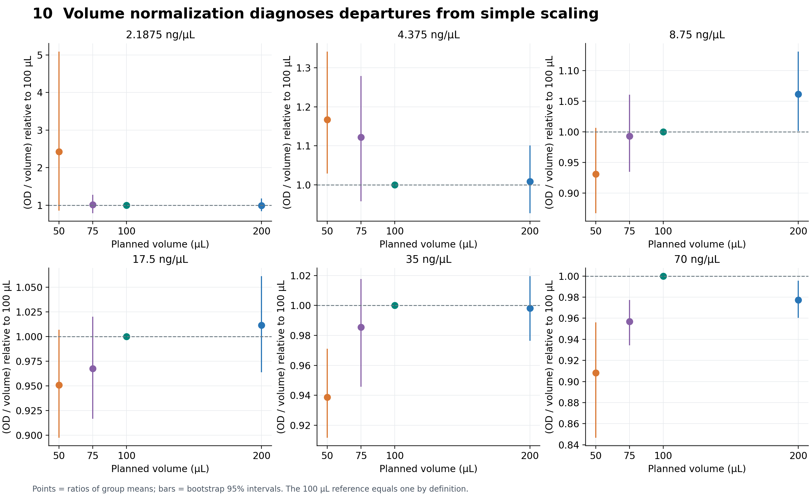
Most volume-normalized responses are close to the 100 µL reference, particularly at moderate concentrations. The 50 µL, 2.1875 ng/µL point is elevated and uncertain because D9 raises its mean. Dividing by planned volume is a descriptive normalization, not a measured path-length correction or evidence of actual dispensed volume.
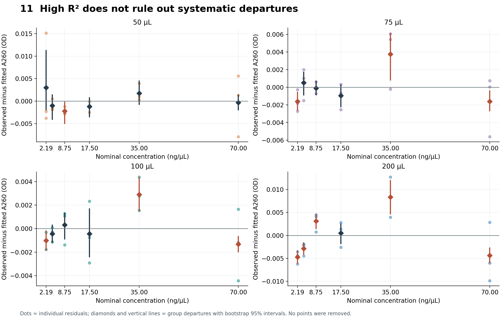
Red group means have 95% bootstrap departure intervals that exclude zero. Several conditions depart detectably from their fitted lines despite high R². These are exploratory, unadjusted comparisons based on one plate. They can reflect optical response, dilution error, dispensing differences or isolated wells; they do not isolate a mechanism.
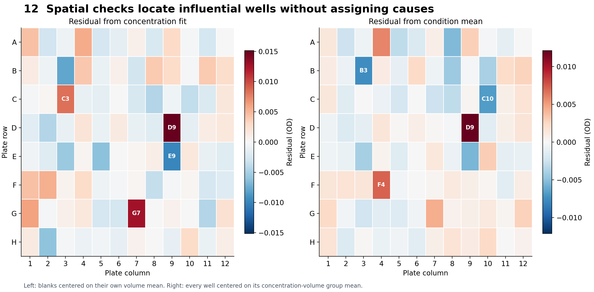
D9 is conspicuous within its own concentration-volume condition. Spatial residuals also identify the strongest discrepancies elsewhere, but each location has only one observation and variance changes with signal. A single map cannot distinguish a positional optical effect from pipetting, dilution or a bubble. All wells remain included.
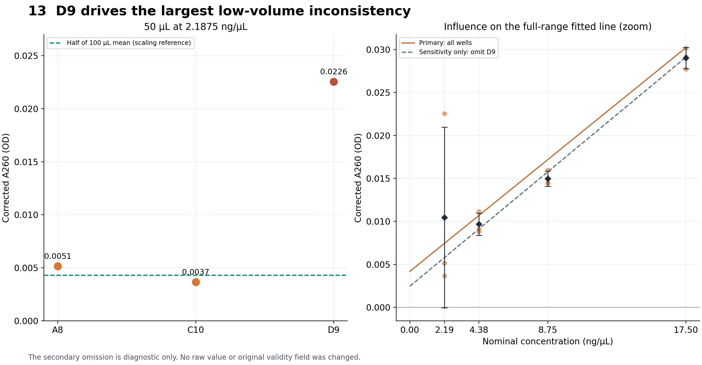
At 50 µL and 2.1875 ng/µL, A8, C10 and D9 read 0.005148, 0.003658 and 0.022558 OD after subtraction. The three-well CV is 100.5%. Omitting D9 only as a sensitivity calculation leaves two wells with CV 23.9%, still uncertain. D9 has no documented physical exclusion reason and is retained in every primary result.
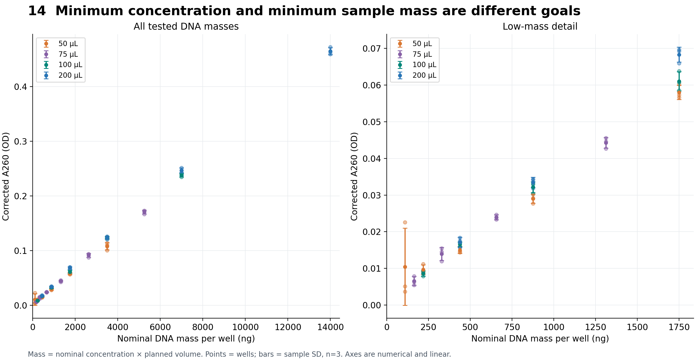
At the lowest tested concentration of 2.1875 ng/µL, the wells contain nominally 109.375, 164.063, 218.75 and 437.5 ng at increasing volumes. The 100 µL condition resolves that level with 8.5% within-plate CV using 218.75 ng. Reducing volume saves DNA but reduces optical signal and can expose dispensing or meniscus variability. Actual DNA mass was not independently measured.
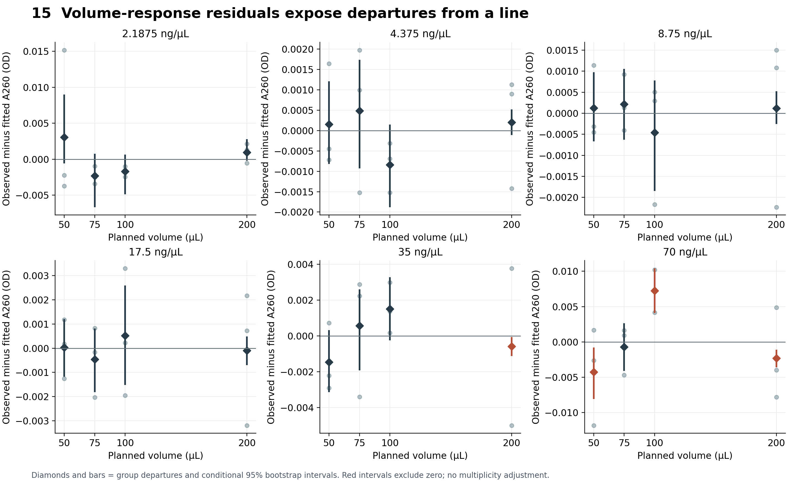
The 35 ng/µL series has an exploratory departure at 200 µL; the 70 ng/µL series has departures at 50, 100 and 200 µL. Lower-concentration series show no clear group departure by this conditional interval rule. The lowest concentration remains imprecise because of D9; absence of a clear departure is not proof of linearity.
Concentration fits use nominal ng/µL on the x-axis; slopes are OD/(ng/µL). Full range: 2.1875-70, n=18 wells per fit. Lower four levels: 2.1875-17.5, n=12. Blank wells are not fitted as calibration points. RMSE = √(SSE/n).
| µL | Range | Slope | Slope 95% interval | Intercept | R² | RMSE (OD) |
|---|---|---|---|---|---|---|
| 50 | Full | 0.001488 | 0.001381-0.001589 | 0.00418 | 0.98285 | 0.00466 |
| 50 | Lower four | 0.001293 | 0.000786-0.001624 | 0.00542 | 0.72551 | 0.00467 |
| 75 | Full | 0.002421 | 0.002370-0.002461 | 0.00287 | 0.99791 | 0.00262 |
| 75 | Lower four | 0.002412 | 0.002299-0.002521 | 0.00241 | 0.99075 | 0.00137 |
| 100 | Full | 0.003385 | 0.003344-0.003424 | 0.00223 | 0.99933 | 0.00208 |
| 100 | Lower four | 0.003413 | 0.003250-0.003589 | 0.00161 | 0.99533 | 0.00137 |
| 200 | Full | 0.006598 | 0.006521-0.006691 | 0.00747 | 0.99877 | 0.00549 |
| 200 | Lower four | 0.006931 | 0.006734-0.007098 | 0.00373 | 0.99523 | 0.00281 |
All slope intervals are above zero. The full curves are strongly increasing and approximately straight overall. Nevertheless, systematic group departures are visible at 75, 100 and 200 µL. At 50 µL the low-range fit deteriorates sharply (R²=0.726), largely because of D9. A high full-range R² is not enough to justify low-end quantitation.
Linearity conclusions use the group-residual intervals on the next page, not an arbitrary R² cutoff. No simultaneous or multiple-comparison adjustment is applied; these departures are exploratory.
Volume fits use 50, 75, 100 and 200 µL at each concentration, n=12 wells. Slope units are OD/µL.
| ng/µL | Slope | Intercept | R² | RMSE (OD) | Group intervals excluding zero |
|---|---|---|---|---|---|
| 2.1875 | 0.0000587 | 0.00446 | 0.3206 | 0.00487 | No clear departure detected |
| 4.375 | 0.0001583 | 0.00161 | 0.9822 | 0.00121 | No clear departure detected |
| 8.75 | 0.0003555 | -0.00293 | 0.9967 | 0.00116 | No clear departure detected |
| 17.5 | 0.0006304 | -0.00254 | 0.9975 | 0.00178 | No clear departure detected |
| 35 | 0.0012522 | -0.00313 | 0.9985 | 0.00272 | 200 µL |
| 70 | 0.0023666 | -0.00607 | 0.9979 | 0.00614 | 50, 100, 200 µL |
50 µL: 8.75 (below) ng/µL; 75 µL: 2.1875 (below), 35 (above), 70 (below) ng/µL; 100 µL: 2.1875 (below), 35 (above), 70 (below) ng/µL; 200 µL: 2.1875 (below), 4.375 (below), 8.75 (above), 35 (above), 70 (below) ng/µL. These are group means whose conditional 95% departure intervals exclude zero. The direction is relative to the fitted line, not to a known true concentration.
The 2.1875 ng/µL volume fit has R²=0.321 and wide uncertainty because the 50 µL group is inconsistent. Its lack of a clear group departure is not affirmative evidence of linearity. At higher concentrations, the small departures may reflect optics, dilution accuracy, dispensing differences or individual wells; this plate does not distinguish the causes.
Acquisition: run dna-a260-f5-20261007T182308Z-4a000d5d; 260 nm, 12 nm bandwidth, excitation slide 2/slot 1; 25.1 °C; measurement timestamp 2026-10-07 18:23:55 UTC. Corning 3635, portrait reader profile reused from the Orange G workflow, height 10.27 mm. The profile is not independently calibrated for this plate. Original validity review remains pending.
Blank correction: raw sample OD minus the mean of six A31 blanks at the same planned volume. Sample SD uses n-1. All original observations and negative corrected blank values are preserved. D9 is flagged without exclusion. Three wells share each sample concentration/volume; all derive from one serial dilution chain, not independent preparation replicates.
Uncertainty: 10,000 percentile bootstrap resamples, seed 1034. Resample three sample wells within each group and six blanks within each volume; reuse the same resampled blank mean across the six concentrations sharing that volume. Fit ordinary least squares with a free intercept. Intervals are conditional on this plate and exclude between-day variation and uncertainty in concentration, dilution and actual volume.
Verification: all 96 well mappings match the raw backend, run manifest and saved layout. The old concentration metadata is explicitly superseded by the user-reported 70 ng/µL stock. Reader blank calculations and all corrected values were reproduced. Fourteen slope/intercept/R²/RMSE results were independently checked with SciPy. Seven input hashes preserve the raw provenance. No reader or robot was connected during analysis.
Recommended follow-up: repeat an independently prepared low-range series, for example 0.25, 0.5, 1, 2, 4 and 8 ng/µL, with matched blanks at 50, 75, 100 and 200 µL. Three samples per condition plus six blanks per volume fill 96 wells. Repeat on separate days, independently check stock concentration and delivered volume, and document bubbles or suspect wells before reading. This would test the suggested ~1 ng/µL noise limit and whether 75 µL is consistently adequate.
[1] Corning 3635 product specification
[2] ICH Q2(R2), sections 3.2.3.3-3.2.3.5
[3] Molecular Devices: DNA/RNA absorbance and path length
The accompanying folder contains an executed notebook, analysis and plotting scripts, original input copies with hashes, all CSV tables, bootstrap arrays and 15 PNG/SVG figure pairs. Open DNA_A260_analysis.ipynb to reproduce the numerical analysis and plots.